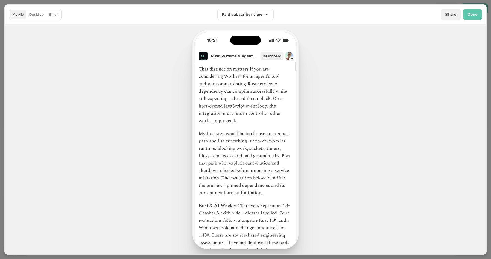
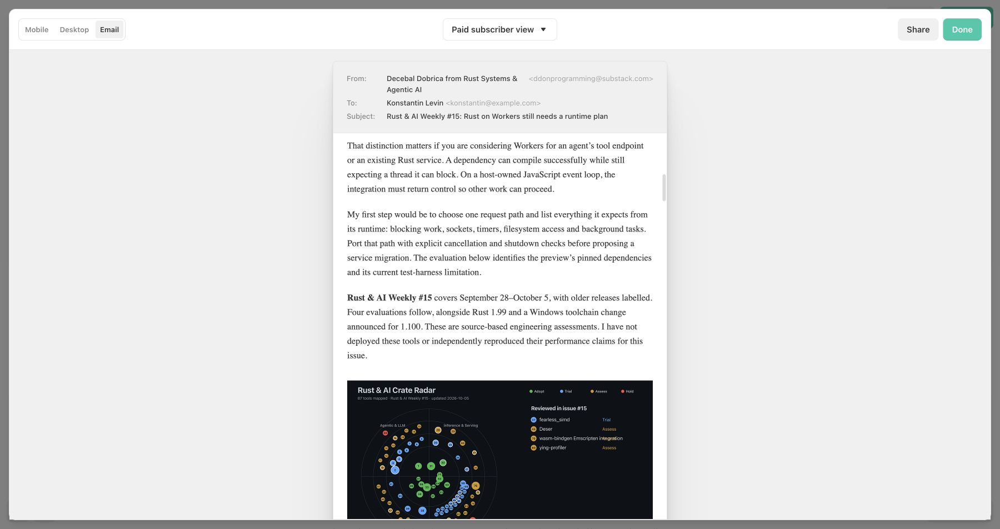

Rust & AI Weekly #15
Reviewers can read the complete edition in a saved Substack draft
Actual site and Substack previews checked on October 5, 2026. The article has 2,430 rendered words, 44 paragraphs, and a longest paragraph of 55 words. No paragraph exceeds 100 words. Both illustrations have descriptive alt text.
Claim ledger and publication checks · Metrics · Unpublished Substack draft
The October 5 edition adds four evaluations and three radar entries
Before: 55a4ebd
The repository contains issue #14 and 84 radar entries. It has no October 5 edition, imagery or social pack.
After: 55a4ebd plus this PR
Issue #15 contains four source-based evaluations, an 87-tool radar, original artwork and synchronized publishing assets. The PR body identifies the final commit SHA for this report and its source files.
The saved draft retains paragraph gaps and both illustrations
The saved draft contains the full article and two uploaded images. These screenshots show Substack's paid-subscriber preview, because the current draft audience is Paid subscribers only. Set Everyone before sending. No newsletter was sent. Browser previews do not establish how a delivered message behaves in a mailbox.


Compare the saved body and sources before approving delivery
- Open the Substack draft linked above. Pass: the title identifies issue #15 and the editor shows Saved.
- Open Preview, select Paid subscriber view, then inspect Mobile and Email. Pass: the final reader question is present, paragraphs have visible gaps, and both images load.
- Compare the HTML source and saved-body comparison receipt. Pass: body text and all 22 non-image links match after whitespace, entities and typographic quotes are normalised.
- Read the claim ledger and social thread. Pass: four verdicts remain bounded by their stated evidence and all seven X posts fit the documented character limit.
A free-preview paywall does not mean the body was lost
The current draft audience is Paid subscribers only. Free subscriber view truncates it; Paid subscriber view shows the complete body. Select Everyone before delivery. Site-image URLs in the canonical HTML require deployment; the saved Substack copy uses uploaded image URLs. The link-response ledger retains the superseded 404 and its checked replacement.
The previews show spacing and image placement that word counts cannot
The actual Next.js article route returned HTTP 200. At 390 × 844, the document width was 390 pixels with no horizontal overflow. The Substack screenshots show the separate publishing renderer's layout; body text and link equality alone would not establish readable paragraph spacing.
What I have not checked
The settled editor showed Saved with no visible email-length warning. The source HTML body is 20,106 bytes before Substack's wrappers; this is not a delivered-email size prediction.
No delivered-mailbox test, live canonical URL check after deployment, independent tool benchmark, production build or whole-repository test suite was completed. The article and social material remain unpublished pending review.